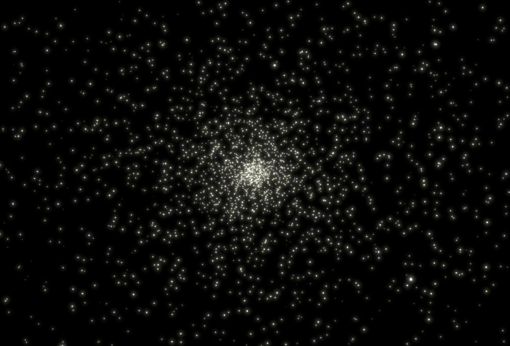

link to this page
Basics of the setting

Everything is located within or near the Stareater Expanse globular cluster.
The Stareater Expanse consists of approximately 10 thousand stars, adding up to roughly 8400 solar masses. The picture shown on the right presents it as seen from 140 light years away.
The densely packed cluster creates ideal conditions for interstellar travel, with stars commonly being as little as 0.1ly apart from their closest neighbours.
relevant pages
 settlement history of
settlement history of